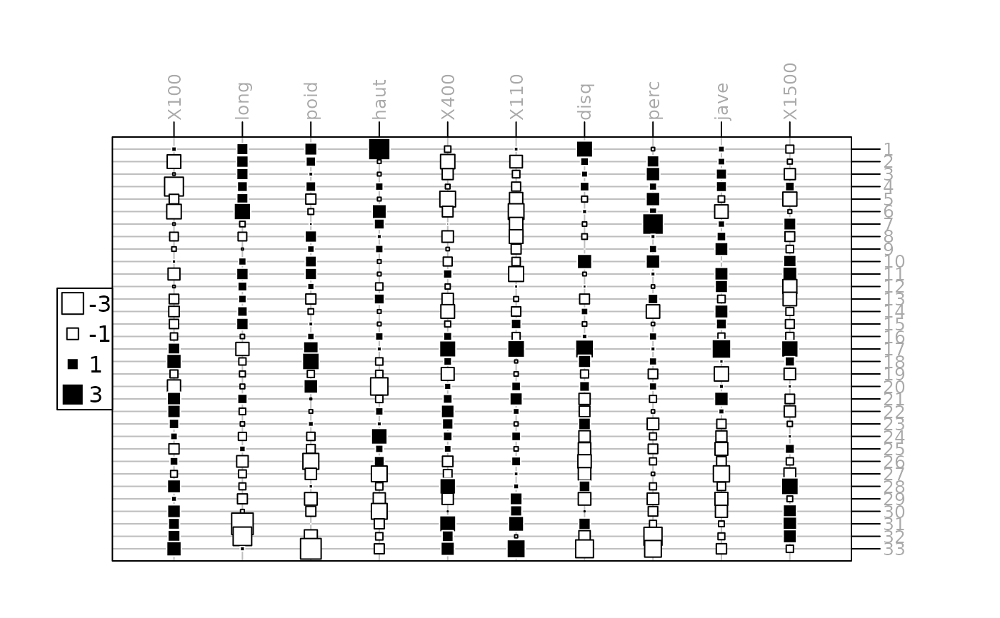
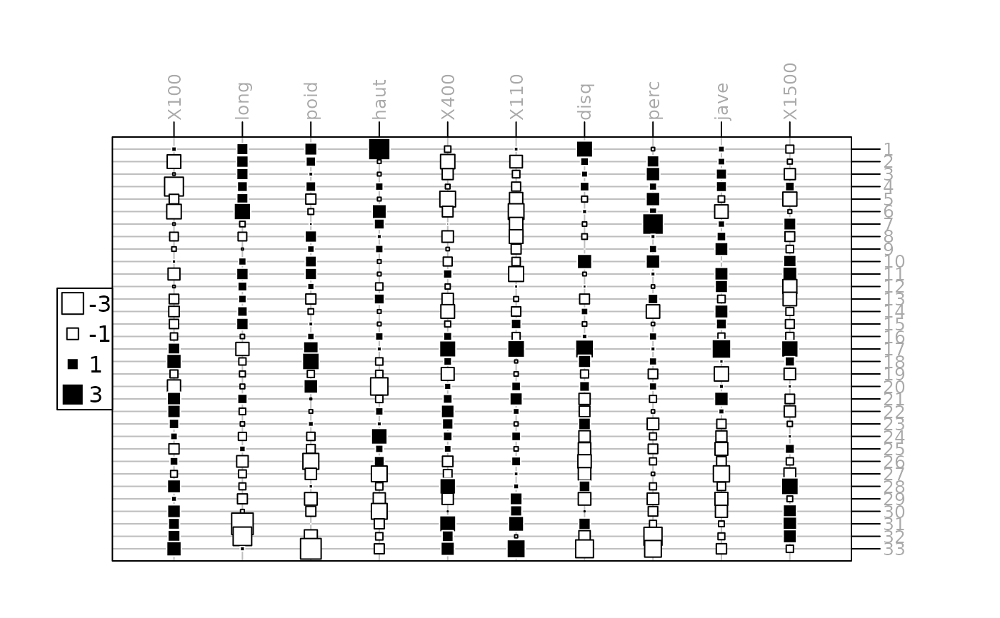

Heat map-like representation with proportional symbols
table.value.RdThis function represents a two dimensional table plot with proportional or colored squares or circles for each value.
Usage
table.value(dftab, coordsx = 1:ncol(as.matrix(dftab)), coordsy =
nrow(as.matrix(dftab)):1, labelsx, labelsy, breaks = NULL, method =
c("size", "color"), symbol = c("square", "circle", "diamond",
"uptriangle", "downtriangle"), col = NULL, nclass = 3, center = 0,
centerpar = NULL, plot = TRUE, storeData = TRUE, add = FALSE, pos = -1, ...)Arguments
- dftab
a data frame, matrix, contingency table or distance matrix used to produce the plot
- coordsx
an integer or a vector indicating the columns of
dftabkept- coordsy
an integer or a vector indicating the rows of
dftabkept- labelsx
columns labels
- labelsy
rows labels
- breaks
a vector of values to split
dftab. IfNULL,pretty(dftab, nclass)is used.- method
colororsizevalue for representz. Ifcolor, a palette of color is used for the symbols (one color per interval). Ifsize, symbols of proportional area are used. Area is 0 for values equals to center (default 0). Two colors are used, for values less than center and larger than center.- symbol
value for symbol type
- col
a color or a colors vector to color symbols. If
methodissize, a 2-length vector of color is expected. Ifmethodiscolor, it must have as many colors as the number of class- nclass
an integer for the number of desired intervals, ignored if
breaksis not missing.- center
a center value for method
size- centerpar
a logical or a list to represent center value using elements in the
adegpar("ppoints")list- plot
a logical indicating if the graphics is displayed
- storeData
a logical indicating if the data should be stored in the returned object. If
FALSE, only the names of the data arguments are stored- add
a logical. If
TRUE, the graphic is superposed to the graphics already plotted in the current device- pos
an integer indicating the position of the environment where the data are stored, relative to the environment where the function is called. Useful only if
storeDataisFALSE- ...
additional graphical parameters (see
adegparandtrellis.par.get)
Value
An object of class ADEg (subclass T.cont if dftab is an table object,
otherwise subclass T.value) or ADEgS (if add is TRUE).
The result is displayed if plot is TRUE.
References
Tanimura, S. and Kuroiwa, C. and Mizota, T. 2006 Proportional symbol mapping in R Journal of Statistical Software 15, 1–7
Author
Alice Julien-Laferriere, Aurelie Siberchicot aurelie.siberchicot@univ-lyon1.fr and Stephane Dray
Examples
## data.frame
data(olympic, package = "ade4")
w <- olympic$tab
w <- data.frame(scale(w))
wpca <- ade4::dudi.pca(w, scann = FALSE)
g1 <- table.value(w, ppoints.cex = 0.5, axis.line = list(col = "darkblue"),
axis.text = list(col = "darkgrey"))
# update the legend position
update(g1, key = list(space = "left"))
 update(g1, key = list(columns = 1))

g2 <- table.value(w, coordsy = rank(wpca$li[, 1]), ppoints.cex = 0.5,
axis.line = list(col = "darkblue"), axis.text = list(col = "darkgrey"))
g3 <- table.value(w, coordsy = wpca$li[, 1], coordsx = wpca$co[, 1], ppoints.cex = 0.5,
axis.line = list(col = "darkblue"), axis.text = list(col = "darkgrey"))
## distance
data(eurodist)
g5 <- table.value(eurodist, symbol = "circle",
ptable.margin = list(bottom = 5, top = 16, left = 5, right = 16))
if (FALSE) { # \dontrun{
## table
data(rpjdl, package = "ade4")
w <- data.frame(t(rpjdl$fau))
wcoa <- ade4::dudi.coa(w, scann = FALSE)
g6 <- table.value(as.table(as.matrix(w)), meanY = TRUE, coordsx = wcoa$c1[,1],
coordsy = rank(wcoa$l1[,1]), ppoints.cex = 0.2, labelsx = "", col = "black")
} # }
update(g1, key = list(columns = 1))

g2 <- table.value(w, coordsy = rank(wpca$li[, 1]), ppoints.cex = 0.5,
axis.line = list(col = "darkblue"), axis.text = list(col = "darkgrey"))
g3 <- table.value(w, coordsy = wpca$li[, 1], coordsx = wpca$co[, 1], ppoints.cex = 0.5,
axis.line = list(col = "darkblue"), axis.text = list(col = "darkgrey"))
## distance
data(eurodist)
g5 <- table.value(eurodist, symbol = "circle",
ptable.margin = list(bottom = 5, top = 16, left = 5, right = 16))
if (FALSE) { # \dontrun{
## table
data(rpjdl, package = "ade4")
w <- data.frame(t(rpjdl$fau))
wcoa <- ade4::dudi.coa(w, scann = FALSE)
g6 <- table.value(as.table(as.matrix(w)), meanY = TRUE, coordsx = wcoa$c1[,1],
coordsy = rank(wcoa$l1[,1]), ppoints.cex = 0.2, labelsx = "", col = "black")
} # }